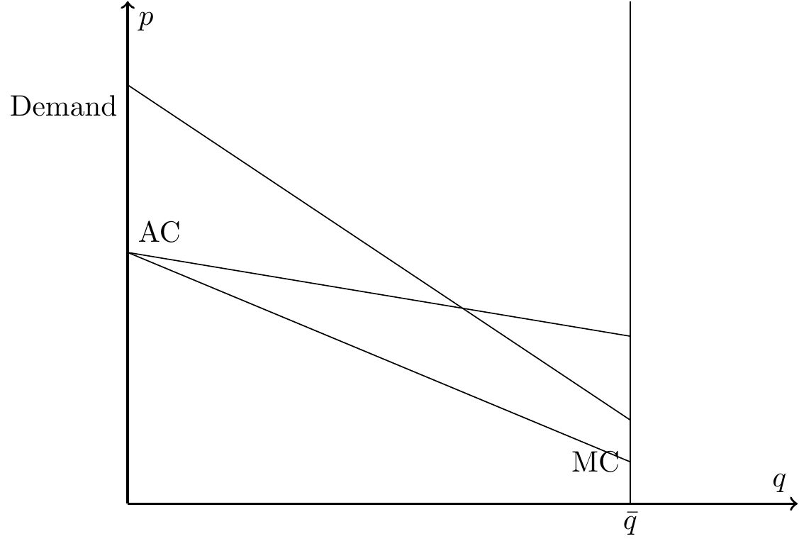
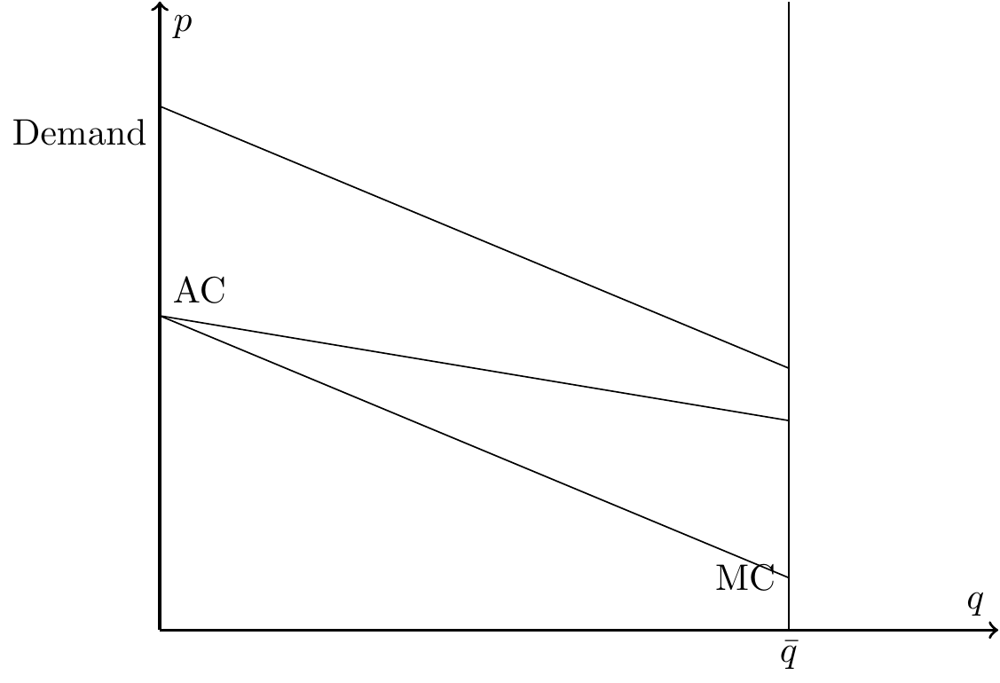
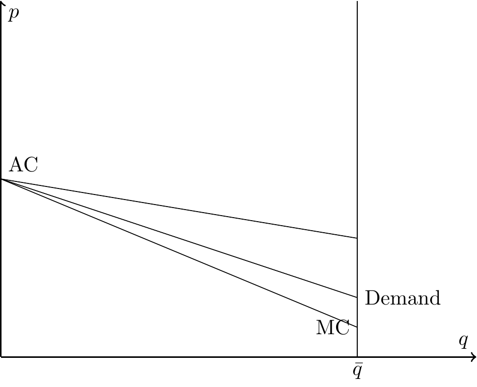

5 Adverse Selection and Pricing
Asymmetric information arises when one party to a transaction has more knowledge than the other. In health insurance markets, individuals generally have better information about their own health conditions and risks than insurers. This imbalance introduces the potential for adverse selection, in which individuals with higher expected health care needs are more likely to purchase or retain insurance than healthier individuals. The result is an enrollment pool that is disproportionately high risk, which raises average costs for insurers and can destabilize the market.
Adverse selection (Definition 4.3) occurs because individuals act on information about their own expected costs that insurers cannot perfectly observe or price. For example, individuals who anticipate higher medical expenses due to chronic conditions or recent diagnoses are more inclined to seek coverage, while healthier individuals may opt out if premiums seem high relative to their perceived risk. This self-selection can create serious challenges for insurers, since the higher concentration of high-cost enrollees increases claims and may lead to financial losses.
A useful illustration comes from special enrollment periods. People who choose to sign up outside the standard open enrollment window often do so in response to new or anticipated health needs. Compared to the average enrollee, these individuals tend to have higher costs, underscoring how private information about health status can affect both the composition of the insured population and the dynamics of pricing in insurance markets.
In this chapter, we use a simple graphical model to illustrate how adverse selection shapes pricing and coverage in health insurance markets. We first present the textbook framework, showing how the interaction of demand, average costs, and marginal costs can generate different market outcomes. We then examine three scenarios—full insurance, partial coverage, and complete unraveling—and discuss the dynamics that drive each. Finally, we consider policy tools that can mitigate adverse selection and sustain insurance markets.
Definition 5.1 (Adverse Selection) Adverse selection occurs when individuals with higher expected health care costs are more likely to purchase or maintain insurance than healthier individuals. It arises from asymmetric information, since individuals know more about their own health risks than insurers, and it leads to an insurance pool that is disproportionately high risk.
5.1 Textbook Adverse Selection Model
Figure 5.1 presents a textbook model of adverse selection, adapted from Einav and Finkelstein (2011). The vertical axis shows the price of insurance (\(p\)) and the horizontal axis the number of enrollees (\(q\)). The figure contains three curves: a downward-sloping demand curve, an average cost (AC) curve, and a marginal cost (MC) curve.
The demand curve reflects the maximum premium individuals are willing to pay. As the price falls, additional—typically healthier—individuals enroll. The average cost curve shows the insurer’s average medical costs across all covered enrollees, which decline as healthier individuals join the pool. The marginal cost curve tracks the expected cost of insuring the next enrollee, which is always lower than the average cost since those entering at the margin are the healthiest.
In a competitive market with community rating (a single premium for all enrollees), equilibrium occurs where demand intersects the average cost curve. At this point, the premium exactly covers expected costs and insurers earn zero profit. Although real insurance markets are rarely perfectly competitive, this stylized model provides a clean framework for analyzing how adverse selection affects prices and coverage.
5.1.1 Full Insurance
In one scenario, demand for health insurance is consistently above the average cost curve, as shown in Figure 5.2. This situation leads to full coverage, since consumers’ willingness to pay always exceeds the insurer’s expected costs. The equilibrium occurs at a point where the number of enrollees is large enough to sustain the market, and the insurer can break even at the community-rated premium.

In this case, adverse selection is not a concern: healthier individuals remain in the pool, average costs stay manageable, and the insurance market is stable. The system achieves broad coverage without compromising the financial viability of insurers.
5.1.2 Under-insurance
Another possibility is that the demand curve intersects the average cost curve at a single point, as in Figure 5.1. In this case, some individuals who are willing to pay more than their expected costs nevertheless remain uninsured. The market equilibrium therefore reflects under-insurance or partial unraveling: coverage is sustained, but at a level below what would occur if all individuals purchased insurance.
This outcome highlights the central inefficiency created by adverse selection. Even though additional people could be insured at premiums above their expected costs, they do not enroll, leaving both insurers and potential enrollees worse off relative to full coverage.
5.1.3 Full Unraveling
A third possibility arises when the demand curve lies entirely below the average cost curve, as in Figure 5.3. In this case, no premium can attract a stable pool of enrollees because willingness to pay is always less than expected costs. The result is complete market unraveling: individuals decline coverage, insurers cannot break even, and the market collapses.

This scenario is sometimes referred to as a death spiral. As premiums rise to cover higher costs, healthier individuals exit the market, driving average costs even higher and reinforcing the cycle until coverage disappears entirely.
5.2 Unraveling
The term unraveling describes the process by which insurance markets shrink or collapse because of adverse selection. As healthier individuals exit the pool, average costs rise, premiums increase, and even more healthy individuals leave. This feedback loop can occur gradually—producing partial unraveling, as in Figure 5.1—or completely, leading to full unraveling as in Figure 5.3.
Conceptually, we can describe unraveling as a sequence of periods. Suppose the insurer initially sets a premium below average costs, so that \(AC > p\). The insurer incurs losses and responds by raising the premium. This increase moves the market upward along the demand curve, causing some of the relatively healthy, low-cost individuals to drop coverage. With these healthier individuals gone, the average cost of the remaining pool rises further.
To break even, the insurer must raise premiums again. Each round of increases triggers additional exit among the lower-cost enrollees, which in turn drives average costs higher. The process continues until the market settles at a smaller, higher-cost pool (partial unraveling) or collapses altogether (full unraveling or death spiral).
5.3 Adverse selection in practice
Insurers use tools such as underwriting, risk adjustment, and actuarial pricing to manage risk pools. But under community rating—where all enrollees face the same premium—insurers inevitably misprice some individuals, particularly in new markets (such as the ACA exchanges) or when regulations shift. As a result, public policy often plays a central role in sustaining coverage.
Three policy approaches are especially important:
Subsidize consumers. Premium subsidies reduce the effective price individuals face. By making coverage more affordable, subsidies encourage healthier individuals to enroll, shifting the demand curve upward and broadening the risk pool. The Affordable Care Act (ACA) provides a clear example: advance premium tax credits substantially increased enrollment, particularly among younger and healthier consumers.
Subsidize insurers. Transfers or reinsurance payments lower the financial burden of covering high-risk individuals. This effectively shifts the average cost curve downward, allowing insurers to charge lower premiums without incurring losses. The ACA initially included “risk corridor” and “reinsurance” programs to stabilize early exchange markets, while many states now operate their own reinsurance programs to keep premiums in check.
Mandate purchases. An individual mandate compels participation by healthier individuals who might otherwise opt out. This expands enrollment to the right along the demand curve, preventing the concentration of only high-risk enrollees. The ACA’s federal mandate (effective in 2014) was intended to serve this role; after the penalty was reduced to zero in 2019, several states adopted their own mandates to preserve market stability.
Each of these approaches combats the forces of unraveling by aligning willingness to pay with average costs. Together, they illustrate how policy can stabilize premiums, preserve broad risk pools, and sustain the financial viability of insurance markets.
Taken together, these policies can be seen as interventions that prevent the transition from full insurance to partial unraveling, or from partial unraveling to a full death spiral. By shifting demand, average costs, or participation, they help markets remain in the stable, high-coverage equilibrium rather than unraveling.